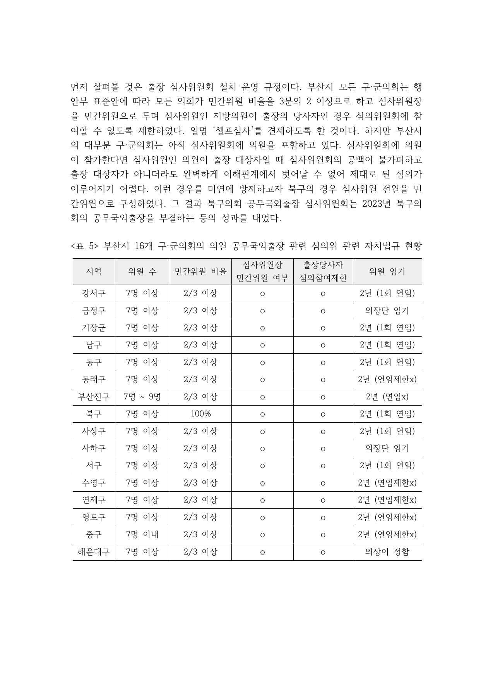
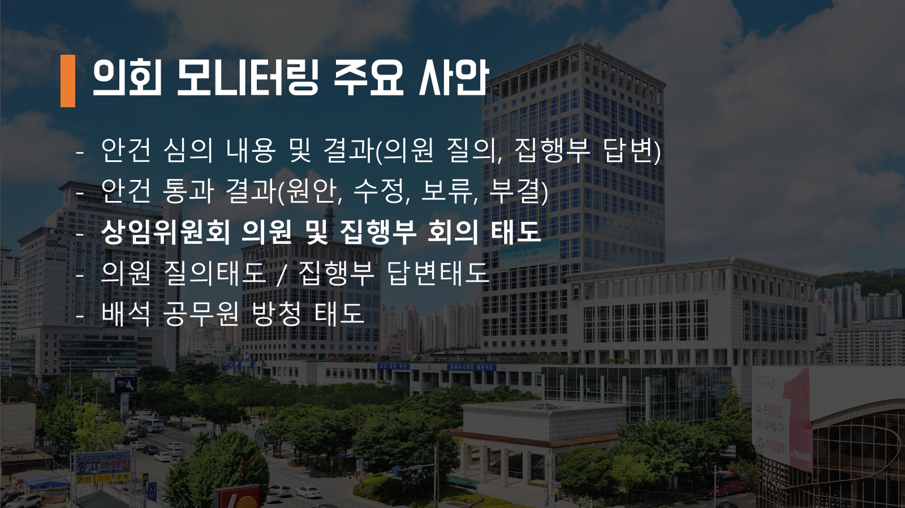
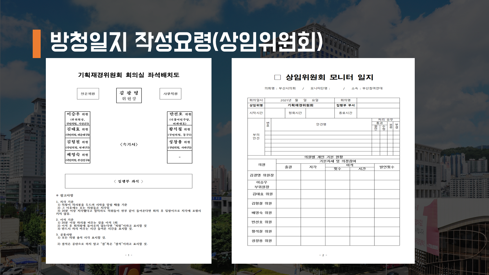
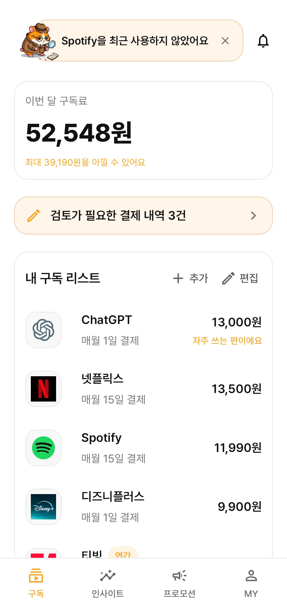

부산참여연대 지방자치본부
간사 → 팀장
지방의회·정책 모니터링, 분석 보고서 작성, 시민 교육과 피해 대응 실무를 맡았습니다.
현대오토에버 · Legal
컴플라이언스 기획 및 운영 지원부산참여연대에서 쌓은 정책 검토·보고서 작성·시민 교육 경험에
SW 프로젝트의 기획과 구현 경험을 더했습니다.
부산참여연대 지방자치본부
2021.05–2025.02 · 간사, 팀장
삼성 청년 SW·AI 아카데미(SSAFY) 수료
2025.07–2026.06
자료 분석·보고서 작성
부산참여연대 · 20232022~2023년 부산시 16개 구·군의회
공무국외출장 실태 분석
본인 역할 분석 보고서 작성 · 토론회 발제
16개 의회의 조례·규칙을 확인하고 행정안전부의 규칙 표준안과 대조했습니다. 계획서·심사회의록·결과보고서를 함께 읽어 규정과 실제 운영 사이의 쟁점을 찾았습니다.
심사위원회 구성, 계획서 제출·공개, 결과보고, 출장 제한·경비 환수를 비교표로 정리했습니다. 시민감시단이 분류한 방문지 자료를 분석에 활용하고, 비공개 항목과 추산값을 구분했습니다.
산출물 41쪽 분석 보고서 · 규정 비교표 · 개선 제안
2023.10.17 보도 · 분석 결과와 심사 독립성 개선 제안

원본 확대 보기분석 결과와 개선 제안
공무국외출장 실태 분석2023년 분석 당시 확인한 내용과 보고서에서 제시한 개선 방향입니다.
민간위원 비율과 출장 당사자의 심의 참여 제한을 비교했습니다. 심사위원에 의원이 포함될 때의 이해관계 문제를 검토했습니다.
의원과 이해관계자의 참여를 제한해 심사위원회의 독립성을 높이도록 제안했습니다.
계획서 제출기한이 출국 20일 또는 30일 전으로 달랐습니다. 심의가 출국일에 임박하면 계획 수정이 어려운 구조를 짚었습니다.
계획서를 최소 60일 전에 제출하고, 수정·보완한 계획을 다시 심의할 수 있도록 제안했습니다.
출장보고서의 제출 대상·기한과 경비 환수 조항을 비교했습니다. 규정이 있어도 보고·정산 절차가 충분한지 살폈습니다.
심사위원회 보고회를 통해 계획과 결과를 비교평가하고, 부실 출장에 대한 제재·환수 절차를 보완하도록 제안했습니다.
제도 교육·활동 운영
부산참여연대 · 의회모니터단본인 역할 교육자료 제작 · 시민 대상 강의 · 현장 방청 운영

원본 확대 보기
원본 확대 보기회의록과 예산안의 핵심을 추리고 지역 현안을 사례로 자료를 구성했습니다. 시의회 기능과 조례·예산 절차를 설명하며 제도가 일상에 미치는 영향을 풀어 전달했습니다.
의원 질의와 집행부 답변에서 살펴볼 항목, 회의 절차, 방청일지 작성법을 안내했습니다. 강의와 현장 방청을 함께 운영하며 제도 이해를 실제 모니터 활동에 연결했습니다.
SW 프로젝트 문서화
SSAFY · 2026.02–03
사용자가 결제 내역에서 구독 후보를 확인하고, 등록한 구독과 추천 정보를 관리하는 Android 팀 프로젝트입니다.
본인 역할 팀장·PM · 요구사항·화면 명세 작성 · 프론트엔드 구현
분석으로 찾은 구독 후보를 확인·제외한 뒤 등록하도록 구성했습니다. 어느 구독인지 모호한 결제 내역은 사용자가 서비스를 직접 선택해 연결하도록 했습니다. 변경된 처리 기준은 요구사항·화면 명세에 반영했습니다.
요구사항정의서 v2.6 · 2026.03.29 원문 발췌
“기획 초안이나 확장 아이디어가 아니라, 실제 앱에서 동작 중인 기능과 화면 흐름을 우선 기준으로 삼는다.”요구사항 문서 발췌 보기
팀 수상 · SSAFY 특화 프로젝트 우수상2026.03.30 · 부울경 1반 3등.
이재호 · 컴플라이언스 기획 및 운영 지원 포트폴리오 · 2026.10